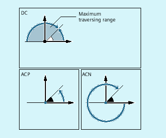
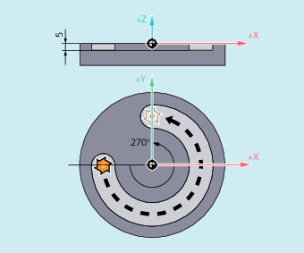

The non-modal and G90/G91-independent commands DC, ACP and ACN are available for positioning rotary axes in absolute dimensions.
DC, ACP and ACN differ in the basic approach strategy:

| Identifier of the rotary axis that is to be traversed (e.g. A, B or C) | |
| Command to directly approach the position The rotary axis approaches the programmed position directly along the shortest path. The rotary axis traverses a maximum range of 180°. | |
| Command to approach the position in the positive direction The rotary axis traverses to the programmed position in the positive direction of axis rotation (counter-clockwise). | |
| Command to approach the position in the negative direction The rotary axis traverses to the programmed position in the negative direction of axis rotation (clockwise). | |
| Rotary axis position to be approached in absolute dimensions | |
Value range: | 0 - 360 degrees | |
| Note |
The positive direction of rotation (clockwise or counter-clockwise) is set in the machine data. |
| Note |
The traversing range between 0° and 360° must be set in the machine data (modulo behavior) for positioning where the direction is specified (ACP, ACN). G91 or IC must be programmed to traverse modulo rotary axes more than 360° in a block. |
| Note |
The commands DC, ACP and ACN can also be used for spindle positioning (SPOS, SPOSA) from standstill. Example: SPOS=DC(45) |
Milling on a rotary table
The tool is stationary, the table turns to 270° in a clockwise direction. A circular groove/slot is machined.
| Program code | Comment |
|---|---|
| N10 SPOS=0 | ; Spindle in position control. |
| N20 G90 G0 X-20 Y0 Z2 T1 | ; Absolute dimensions, feed in tool T1 in rapid traverse. |
| N30 G1 Z-5 F500 | ; Lower tool with the feedrate. |
| N40 C=ACP(270) | ; Table turns clockwise to 270 degrees (positive), the tool mills a circular groove. |
| N50 G0 Z2 M30 | ; Retraction, end of program. |
See also:
Absolute dimensions (G90, AC)